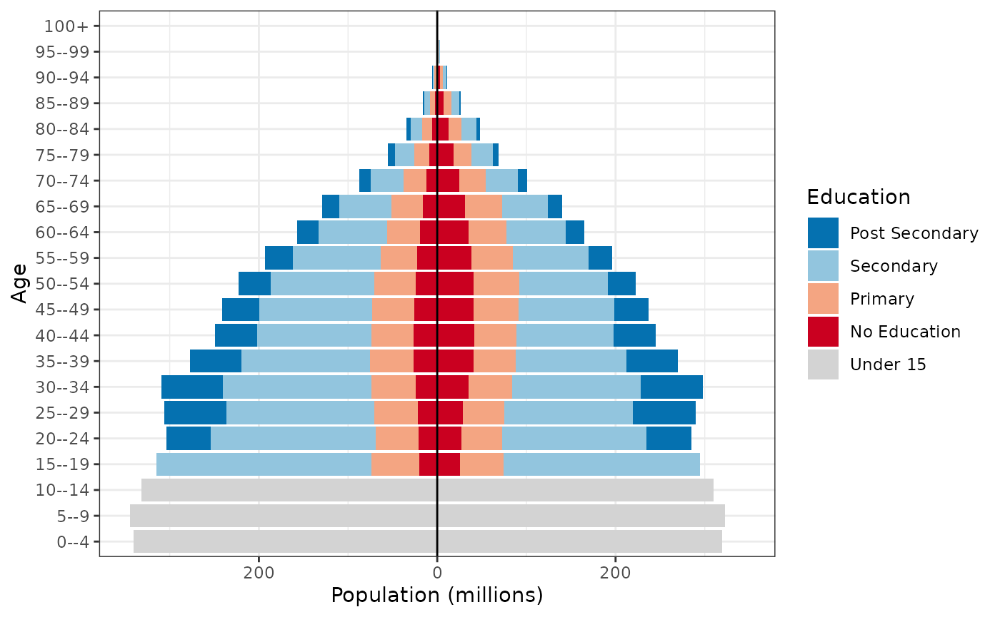
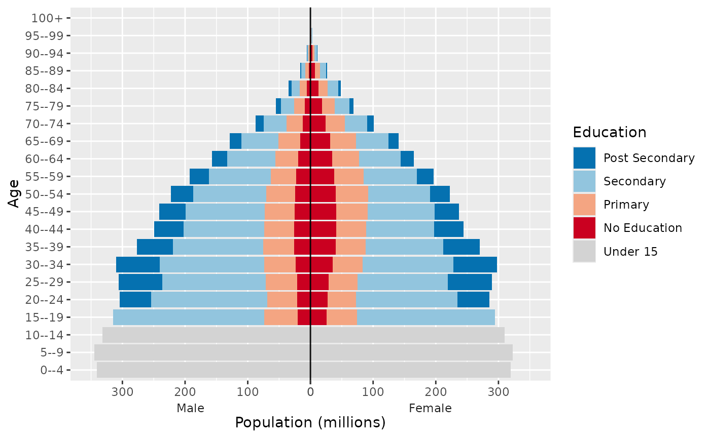
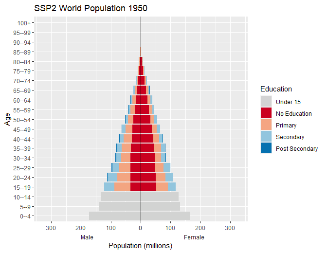

Overview of the wcde package
Guy J. Abel, Samir K.C., Michaela Potancokova, Claudia Reiter, Andrea Tamburini and Dilek Yildiz
Source:vignettes/wcde.Rmd
wcde.RmdThe wcde package allows for R users to easily download
data from the Wittgenstein Centre
for Demography and Human Capital Data Explorer as well as containing
a number of helpful functions for working with education specific
demographic data.
Installation
You can install the released version of wcde from CRAN with:
install.packages("wcde")Install the developmental version with:
Getting data into R
The get_wcde() function can be used to download data
from the Wittgenstein Centre Human Capital Data Explorer. It requires
three user inputs
-
indicator: a short code for the indicator of interest -
scenario: a number referring to a SSP narrative, by default 2 is used (for SSP2) -
country_code(orcountry_name): corresponding to the country of interest
library(wcde)
# download education specific tfr data
get_wcde(indicator = "etfr",
country_name = c("Brazil", "Albania"))
#> # A tibble: 192 × 6
#> scenario name country_code education period etfr
#> <dbl> <chr> <dbl> <chr> <chr> <dbl>
#> 1 2 Brazil 76 No Education 2020-2025 2.2
#> 2 2 Albania 8 No Education 2020-2025 2.3
#> 3 2 Brazil 76 Incomplete Primary 2020-2025 2.2
#> 4 2 Albania 8 Incomplete Primary 2020-2025 2.5
#> 5 2 Brazil 76 Primary 2020-2025 2.2
#> 6 2 Albania 8 Primary 2020-2025 2.2
#> 7 2 Brazil 76 Lower Secondary 2020-2025 1.8
#> 8 2 Albania 8 Lower Secondary 2020-2025 1.9
#> 9 2 Brazil 76 Upper Secondary 2020-2025 1.3
#> 10 2 Albania 8 Upper Secondary 2020-2025 1.6
#> # ℹ 182 more rows
# download education specific survivorship rates
get_wcde(indicator = "eassr",
country_name = c("Niger", "Korea"))
#> # A tibble: 8,448 × 8
#> scenario name country_code age sex education period eassr
#> <dbl> <chr> <dbl> <chr> <chr> <chr> <chr> <dbl>
#> 1 2 Niger 562 15--19 Male No Educati… 2020-… 0.986
#> 2 2 Republic of Korea 410 15--19 Male No Educati… 2020-… 0.999
#> 3 2 Niger 562 15--19 Male Incomplete… 2020-… 0.988
#> 4 2 Republic of Korea 410 15--19 Male Incomplete… 2020-… 0.999
#> 5 2 Niger 562 15--19 Male Primary 2020-… 0.989
#> 6 2 Republic of Korea 410 15--19 Male Primary 2020-… 0.999
#> 7 2 Niger 562 15--19 Male Lower Seco… 2020-… 0.992
#> 8 2 Republic of Korea 410 15--19 Male Lower Seco… 2020-… 0.999
#> 9 2 Niger 562 15--19 Male Upper Seco… 2020-… 0.992
#> 10 2 Republic of Korea 410 15--19 Male Upper Seco… 2020-… 0.999
#> # ℹ 8,438 more rowsIndicator codes
The indicator input must match the short code from the indicator
table. The find_indicator() function can be used to look up
short codes (given in the first column) from the
wic_indicators data frame:
find_indicator(x = "tfr")
#> # A tibble: 2 × 6
#> indicator description `wcde-v3` `wcde-v2` `wcde-v1` definition_latest
#> <chr> <chr> <chr> <chr> <chr> <chr>
#> 1 etfr Total Fertility Rat… projecti… projecti… projecti… The average numb…
#> 2 tfr Total Fertility Rate projecti… past-ava… past-ava… The average numb…Temporal coverage
By default, get_wdce() returns data for all years or
available periods or years. The filter() function in dplyr can
be used to filter data for specific years or periods, for example:
library(tidyverse)
get_wcde(indicator = "e0",
country_name = c("Japan", "Australia")) %>%
filter(period == "2015-2020")
#> # A tibble: 0 × 6
#> # ℹ 6 variables: scenario <dbl>, name <chr>, country_code <dbl>, sex <chr>,
#> # period <chr>, e0 <dbl>
get_wcde(indicator = "sexratio",
country_name = c("China", "South Korea")) %>%
filter(year == 2020)
#> # A tibble: 44 × 6
#> scenario name country_code age year sexratio
#> <dbl> <chr> <dbl> <chr> <dbl> <dbl>
#> 1 2 China 156 All 2020 1.05
#> 2 2 Republic of Korea 410 All 2020 1
#> 3 2 China 156 0--4 2020 1.14
#> 4 2 Republic of Korea 410 0--4 2020 1.05
#> 5 2 China 156 5--9 2020 1.16
#> 6 2 Republic of Korea 410 5--9 2020 1.05
#> 7 2 China 156 10--14 2020 1.17
#> 8 2 Republic of Korea 410 10--14 2020 1.07
#> 9 2 China 156 15--19 2020 1.17
#> 10 2 Republic of Korea 410 15--19 2020 1.08
#> # ℹ 34 more rowsPast data is only available for selected indicators. These can be viewed using the version column:
wic_indicators %>%
filter(`wcde-v2` == "past-available") %>%
select(1:2)
#> # A tibble: 28 × 2
#> indicator description
#> <chr> <chr>
#> 1 asfr Age-Specific Fertility Rate
#> 2 assr Age-Specific Survival Ratio
#> 3 bmys Mean Years of Schooling by Broad Age
#> 4 bpop Population Size by Broad Age (000's)
#> 5 bprop Educational Attainment Distribution by Broad Age
#> 6 cbr Crude Birth Rate
#> 7 cdr Crude Death Rate
#> 8 e0 Life Expectancy at Birth
#> 9 epop Population Size by Education (000's)
#> 10 ggapedu15 Gender Gap in Educational Attainment (15+)
#> # ℹ 18 more rowsThe filter() function can also be used to filter
specific indicators to specific age, sex or education groups
Country names and codes
Country names are guessed using the countrycode package.
get_wcde(indicator = "tfr",
country_name = c("U.A.E", "Espania", "Österreich"))
#> # A tibble: 48 × 5
#> scenario name country_code period tfr
#> <dbl> <chr> <dbl> <chr> <dbl>
#> 1 2 United Arab Emirates 784 2020-2025 1.33
#> 2 2 Spain 724 2020-2025 1.17
#> 3 2 Austria 40 2020-2025 1.44
#> 4 2 United Arab Emirates 784 2025-2030 1.33
#> 5 2 Spain 724 2025-2030 1.20
#> 6 2 Austria 40 2025-2030 1.44
#> 7 2 United Arab Emirates 784 2030-2035 1.34
#> 8 2 Spain 724 2030-2035 1.25
#> 9 2 Austria 40 2030-2035 1.45
#> 10 2 United Arab Emirates 784 2035-2040 1.36
#> # ℹ 38 more rowsThe get_wcde() functions accepts ISO alpha numeric codes
for countries via the country_code argument:
get_wcde(indicator = "etfr", country_code = c(44, 100))
#> # A tibble: 192 × 6
#> scenario name country_code education period etfr
#> <dbl> <chr> <dbl> <chr> <chr> <dbl>
#> 1 2 Bahamas 44 No Education 2020-2025 2.2
#> 2 2 Bulgaria 100 No Education 2020-2025 1.9
#> 3 2 Bahamas 44 Incomplete Primary 2020-2025 2.2
#> 4 2 Bulgaria 100 Incomplete Primary 2020-2025 1.9
#> 5 2 Bahamas 44 Primary 2020-2025 2.2
#> 6 2 Bulgaria 100 Primary 2020-2025 1.9
#> 7 2 Bahamas 44 Lower Secondary 2020-2025 1.7
#> 8 2 Bulgaria 100 Lower Secondary 2020-2025 1.9
#> 9 2 Bahamas 44 Upper Secondary 2020-2025 1.5
#> 10 2 Bulgaria 100 Upper Secondary 2020-2025 1.5
#> # ℹ 182 more rowsA full list of available countries and region aggregates, and their
codes, can be found in the wic_locations data frame.
wic_locations
#> # A tibble: 232 × 8
#> name isono continent region dim `wcde-v3` `wcde-v2` `wcde-v1`
#> <chr> <dbl> <chr> <chr> <chr> <lgl> <lgl> <lgl>
#> 1 World 900 NA NA area TRUE TRUE TRUE
#> 2 Africa 903 NA NA area TRUE TRUE TRUE
#> 3 Asia 935 NA NA area TRUE TRUE TRUE
#> 4 Europe 908 NA NA area TRUE TRUE TRUE
#> 5 Latin America and… 904 NA NA area TRUE TRUE TRUE
#> 6 Northern America 905 NA NA area TRUE TRUE TRUE
#> 7 Oceania 909 NA NA area TRUE TRUE TRUE
#> 8 Afghanistan 4 Asia South… coun… TRUE TRUE TRUE
#> 9 Albania 8 Europe South… coun… TRUE TRUE TRUE
#> 10 Algeria 12 Africa North… coun… TRUE TRUE TRUE
#> # ℹ 222 more rowsScenarios
By default get_wcde() returns data for Medium (SSP2)
scenario. Results for different SSP scenarios can be returned by passing
a different (or multiple) scenario values to the scenario
argument in get_data().
get_wcde(indicator = "growth",
country_name = c("India", "China"),
scenario = c(1:3, 22, 23)) %>%
filter(period == "2095-2100")
#> # A tibble: 10 × 5
#> scenario name country_code period growth
#> <dbl> <chr> <dbl> <chr> <dbl>
#> 1 1 India 356 2095-2100 -1
#> 2 1 China 156 2095-2100 -1
#> 3 2 India 356 2095-2100 -0.5
#> 4 2 China 156 2095-2100 -1
#> 5 3 India 356 2095-2100 0.2
#> 6 3 China 156 2095-2100 -0.4
#> 7 22 India 356 2095-2100 -0.5
#> 8 22 China 156 2095-2100 -1
#> 9 23 India 356 2095-2100 -0.5
#> 10 23 China 156 2095-2100 -1Set include_scenario_names = TRUE to include a columns
with the full names of the scenarios
get_wcde(indicator = "tfr",
country_name = c("Kenya", "Nigeria", "Algeria"),
scenario = 1:3,
include_scenario_names = TRUE) %>%
filter(period == "2045-2050")
#> # A tibble: 9 × 7
#> scenario scenario_name scenario_abb name country_code period tfr
#> <dbl> <chr> <chr> <chr> <dbl> <chr> <dbl>
#> 1 1 Rapid Development (SSP1) SSP1 Kenya 404 2045-… 1.63
#> 2 1 Rapid Development (SSP1) SSP1 Nige… 566 2045-… 2.62
#> 3 1 Rapid Development (SSP1) SSP1 Alge… 12 2045-… 1.53
#> 4 2 Medium (SSP2) SSP2 Kenya 404 2045-… 2.34
#> 5 2 Medium (SSP2) SSP2 Nige… 566 2045-… 3.76
#> 6 2 Medium (SSP2) SSP2 Alge… 12 2045-… 2.06
#> 7 3 Stalled Development (SS… SSP3 Kenya 404 2045-… 3.03
#> 8 3 Stalled Development (SS… SSP3 Nige… 566 2045-… 4.84
#> 9 3 Stalled Development (SS… SSP3 Alge… 12 2045-… 2.68Additional details of the pathways for each scenario numeric code can
be found in the wic_scenarios object. Further background
and links to the corresponding literature are provided in the Data Explorer
wic_scenarios
#> # A tibble: 9 × 6
#> scenario_name scenario scenario_abb `wcde-v3` `wcde-v2` `wcde-v1`
#> <chr> <dbl> <chr> <lgl> <lgl> <lgl>
#> 1 Rapid Development (SSP1) 1 SSP1 TRUE TRUE TRUE
#> 2 Medium (SSP2) 2 SSP2 TRUE TRUE TRUE
#> 3 Stalled Development (SSP3) 3 SSP3 TRUE TRUE TRUE
#> 4 Inequality (SSP4) 4 SSP4 TRUE FALSE TRUE
#> 5 Conventional Development … 5 SSP5 TRUE FALSE TRUE
#> 6 Medium - Zero Migration (… 22 SSP2-ZM TRUE TRUE FALSE
#> 7 Medium - Double Migration… 23 SSP2-DM TRUE TRUE FALSE
#> 8 Medium - Constant Enrolme… 20 SSP2-CER FALSE FALSE TRUE
#> 9 Medium - Fast Track Educa… 21 SSP2-FT FALSE FALSE TRUEAll countries data
Data for all countries can be obtained by not setting
country_name or country_code
get_wcde(indicator = "mage")
#> # A tibble: 3,876 × 5
#> scenario name country_code year mage
#> <dbl> <chr> <dbl> <dbl> <dbl>
#> 1 2 Bulgaria 100 2020 40.1
#> 2 2 Myanmar 104 2020 24.6
#> 3 2 Burundi 108 2020 11.5
#> 4 2 Belarus 112 2020 35.9
#> 5 2 Cambodia 116 2020 22
#> 6 2 Algeria 12 2020 23.5
#> 7 2 Cameroon 120 2020 13.5
#> 8 2 Canada 124 2020 35.9
#> 9 2 Cape Verde 132 2020 21.8
#> 10 2 Central African Republic 140 2020 10.7
#> # ℹ 3,866 more rowsMultiple indicators
The get_wdce() function needs to be called multiple
times to download multiple indicators. This can be done using the
map() function in purrr
mi <- tibble(ind = c("odr", "nirate", "ggapedu25")) %>%
mutate(d = map(.x = ind, .f = ~get_wcde(indicator = .x)))
mi
#> # A tibble: 3 × 2
#> ind d
#> <chr> <list>
#> 1 odr <tibble [3,876 × 5]>
#> 2 nirate <tibble [3,648 × 5]>
#> 3 ggapedu25 <tibble [23,256 × 6]>
mi %>%
filter(ind == "odr") %>%
select(-ind) %>%
unnest(cols = d)
#> # A tibble: 3,876 × 5
#> scenario name country_code year odr
#> <dbl> <chr> <dbl> <dbl> <dbl>
#> 1 2 Bulgaria 100 2020 0.35
#> 2 2 Myanmar 104 2020 0.09
#> 3 2 Burundi 108 2020 0.05
#> 4 2 Belarus 112 2020 0.25
#> 5 2 Cambodia 116 2020 0.08
#> 6 2 Algeria 12 2020 0.09
#> 7 2 Cameroon 120 2020 0.05
#> 8 2 Canada 124 2020 0.27
#> 9 2 Cape Verde 132 2020 0.08
#> 10 2 Central African Republic 140 2020 0.05
#> # ℹ 3,866 more rows
mi %>%
filter(ind == "nirate") %>%
select(-ind) %>%
unnest(cols = d)
#> # A tibble: 3,648 × 5
#> scenario name country_code period nirate
#> <dbl> <chr> <dbl> <chr> <dbl>
#> 1 2 Bulgaria 100 2020-2025 -10.7
#> 2 2 Myanmar 104 2020-2025 7.5
#> 3 2 Burundi 108 2020-2025 28
#> 4 2 Belarus 112 2020-2025 -5.9
#> 5 2 Cambodia 116 2020-2025 12.8
#> 6 2 Algeria 12 2020-2025 17.3
#> 7 2 Cameroon 120 2020-2025 27
#> 8 2 Canada 124 2020-2025 1.6
#> 9 2 Cape Verde 132 2020-2025 11.8
#> 10 2 Central African Republic 140 2020-2025 33.4
#> # ℹ 3,638 more rows
mi %>%
filter(ind == "ggapedu25") %>%
select(-ind) %>%
unnest(cols = d)
#> # A tibble: 23,256 × 6
#> scenario name country_code year education ggapedu25
#> <dbl> <chr> <dbl> <dbl> <chr> <dbl>
#> 1 2 Bulgaria 100 2020 No Education -0.5
#> 2 2 Myanmar 104 2020 No Education -4.3
#> 3 2 Burundi 108 2020 No Education 14.7
#> 4 2 Belarus 112 2020 No Education -0.1
#> 5 2 Cambodia 116 2020 No Education -11.9
#> 6 2 Algeria 12 2020 No Education -16.3
#> 7 2 Cameroon 120 2020 No Education -10.2
#> 8 2 Canada 124 2020 No Education 0
#> 9 2 Cape Verde 132 2020 No Education 2.6
#> 10 2 Central African Republic 140 2020 No Education -31.3
#> # ℹ 23,246 more rowsPrevious versions
Previous versions of projections from the Wittgenstein Centre for
Demography are available using the version argument in
get_wdce(). Set version to "wcde-v1"
or "wcde-v2"
or "wcde-v3"
(the default since 2024).
get_wcde(indicator = "etfr",
country_name = c("Brazil", "Albania"),
version = "wcde-v2")
#> # A tibble: 204 × 6
#> scenario name country_code education period etfr
#> <dbl> <chr> <dbl> <chr> <chr> <dbl>
#> 1 2 Brazil 76 No Education 2015-2020 2.47
#> 2 2 Albania 8 No Education 2015-2020 1.88
#> 3 2 Brazil 76 Incomplete Primary 2015-2020 2.47
#> 4 2 Albania 8 Incomplete Primary 2015-2020 1.88
#> 5 2 Brazil 76 Primary 2015-2020 2.47
#> 6 2 Albania 8 Primary 2015-2020 1.88
#> 7 2 Brazil 76 Lower Secondary 2015-2020 1.89
#> 8 2 Albania 8 Lower Secondary 2015-2020 1.9
#> 9 2 Brazil 76 Upper Secondary 2015-2020 1.37
#> 10 2 Albania 8 Upper Secondary 2015-2020 1.57
#> # ℹ 194 more rowsNote, not all indicators and scenarios are available in all versions
- see the the wic_indicators and wic_scenarios
objects for further details or see above.
Server
If you have trouble with connecting to the IIASA server you can try
alternative hosts using the server option in
get_wcde(), which can be set to "iiasa"
(default) "github" and "1&1".
get_wcde(indicator = "etfr",
country_name = c("Brazil", "Albania"),
version = "wcde-v2", server = "github")
#> # A tibble: 204 × 6
#> scenario name country_code education period etfr
#> <dbl> <chr> <dbl> <chr> <chr> <dbl>
#> 1 2 Brazil 76 No Education 2015-2020 2.47
#> 2 2 Albania 8 No Education 2015-2020 1.88
#> 3 2 Brazil 76 Incomplete Primary 2015-2020 2.47
#> 4 2 Albania 8 Incomplete Primary 2015-2020 1.88
#> 5 2 Brazil 76 Primary 2015-2020 2.47
#> 6 2 Albania 8 Primary 2015-2020 1.88
#> 7 2 Brazil 76 Lower Secondary 2015-2020 1.89
#> 8 2 Albania 8 Lower Secondary 2015-2020 1.9
#> 9 2 Brazil 76 Upper Secondary 2015-2020 1.37
#> 10 2 Albania 8 Upper Secondary 2015-2020 1.57
#> # ℹ 194 more rowsYou may also set server = "search-available" to search
through the three possible data location to download the data wherever
it is available.
Working with population data
Population data for a range of age-sex-educational attainment
combinations can be obtained by setting indicator = "pop"
in get_wcde() and specifying a pop_age,
pop_sex and pop_edu arguments. By default each
of the three population breakdown arguments are set to “total”
get_wcde(indicator = "pop", country_name = "India")
#> # A tibble: 17 × 5
#> scenario name country_code year pop
#> <dbl> <chr> <dbl> <dbl> <dbl>
#> 1 2 India 356 2020 1389966.
#> 2 2 India 356 2025 1445483
#> 3 2 India 356 2030 1501738.
#> 4 2 India 356 2035 1548090.
#> 5 2 India 356 2040 1583720.
#> 6 2 India 356 2045 1607739.
#> 7 2 India 356 2050 1620412.
#> 8 2 India 356 2055 1625124.
#> 9 2 India 356 2060 1622642.
#> 10 2 India 356 2065 1612219.
#> 11 2 India 356 2070 1594757.
#> 12 2 India 356 2075 1570106.
#> 13 2 India 356 2080 1539580.
#> 14 2 India 356 2085 1505082
#> 15 2 India 356 2090 1468387.
#> 16 2 India 356 2095 1430324.
#> 17 2 India 356 2100 1391805.The pop_age argument can be set to all to
get population data broken down in five-year age groups. The
pop_sex argument can be set to both to get
population data broken down into female and male groups. The
pop_edu argument can be set to four,
six or eight to get population data broken
down into education categorizations with different levels of detail.
get_wcde(indicator = "pop", country_code = 900, pop_edu = "four")
#> # A tibble: 85 × 6
#> scenario name country_code year education pop
#> <dbl> <fct> <dbl> <dbl> <fct> <dbl>
#> 1 2 World 900 2020 Under 15 2012336.
#> 2 2 World 900 2020 No Education 760822.
#> 3 2 World 900 2020 Primary 1209734.
#> 4 2 World 900 2020 Secondary 2854285.
#> 5 2 World 900 2020 Post Secondary 967797.
#> 6 2 World 900 2025 Under 15 2002913.
#> 7 2 World 900 2025 No Education 727777.
#> 8 2 World 900 2025 Primary 1215407.
#> 9 2 World 900 2025 Secondary 3068268.
#> 10 2 World 900 2025 Post Secondary 1137272.
#> # ℹ 75 more rowsThe population breakdown arguments can be used in combination to provide further breakdowns, for example sex and education specific population totals
get_wcde(indicator = "pop", country_code = 900, pop_edu = "six", pop_sex = "both")
#> # A tibble: 238 × 7
#> scenario name country_code year sex education pop
#> <dbl> <fct> <dbl> <dbl> <fct> <fct> <dbl>
#> 1 2 World 900 2020 Male Under 15 1037900
#> 2 2 World 900 2020 Male No Education 288158.
#> 3 2 World 900 2020 Male Incomplete Primary 185528
#> 4 2 World 900 2020 Male Primary 409939
#> 5 2 World 900 2020 Male Lower Secondary 654516
#> 6 2 World 900 2020 Male Upper Secondary 859237.
#> 7 2 World 900 2020 Male Post Secondary 490895.
#> 8 2 World 900 2020 Female Under 15 974436.
#> 9 2 World 900 2020 Female No Education 472664.
#> 10 2 World 900 2020 Female Incomplete Primary 198402
#> # ℹ 228 more rowsThe full age-sex-education specific data can also be obtained by
setting indicator = "epop" in get_wcde().
Population pyramids
Create population pyramids by setting male population values to negative equivalent to allow for divergent columns from the y axis.
w <- get_wcde(indicator = "pop", country_code = 900,
pop_age = "all", pop_sex = "both", pop_edu = "four",
version = "wcde-v2")
w
#> # A tibble: 6,510 × 8
#> scenario name country_code year age sex education pop
#> <dbl> <fct> <dbl> <int> <fct> <fct> <fct> <dbl>
#> 1 2 World 900 1950 0--4 Male Under 15 172362.
#> 2 2 World 900 1950 0--4 Male No Education 0
#> 3 2 World 900 1950 0--4 Male Primary 0
#> 4 2 World 900 1950 0--4 Male Secondary 0
#> 5 2 World 900 1950 0--4 Male Post Secondary 0
#> 6 2 World 900 1950 0--4 Female Under 15 166026.
#> 7 2 World 900 1950 0--4 Female No Education 0
#> 8 2 World 900 1950 0--4 Female Primary 0
#> 9 2 World 900 1950 0--4 Female Secondary 0
#> 10 2 World 900 1950 0--4 Female Post Secondary 0
#> # ℹ 6,500 more rows
w <- w %>%
mutate(pop_pm = ifelse(test = sex == "Male", yes = -pop, no = pop),
pop_pm = pop_pm/1e3)
w
#> # A tibble: 6,510 × 9
#> scenario name country_code year age sex education pop pop_pm
#> <dbl> <fct> <dbl> <int> <fct> <fct> <fct> <dbl> <dbl>
#> 1 2 World 900 1950 0--4 Male Under 15 172362. -172.
#> 2 2 World 900 1950 0--4 Male No Education 0 0
#> 3 2 World 900 1950 0--4 Male Primary 0 0
#> 4 2 World 900 1950 0--4 Male Secondary 0 0
#> 5 2 World 900 1950 0--4 Male Post Secondary 0 0
#> 6 2 World 900 1950 0--4 Female Under 15 166026. 166.
#> 7 2 World 900 1950 0--4 Female No Education 0 0
#> 8 2 World 900 1950 0--4 Female Primary 0 0
#> 9 2 World 900 1950 0--4 Female Secondary 0 0
#> 10 2 World 900 1950 0--4 Female Post Secondary 0 0
#> # ℹ 6,500 more rowsStandard plot
Use standard ggplot code to create population pyramid with
-
scale_x_symmetric()from thelemonpackage to allow for equal male and female x-axis - fill colours set to the
wic_col4object in the wcde package which contains the names of the colours used in the Wittgenstein Centre Human Capital Data Explorer Data Explorer.
Note wic_col6 and wic_col8 objects also
exist for equivalent plots of population data objects with corresponding
numbers of categories of education.
library(lemon)
w %>%
filter(year == 2020) %>%
ggplot(mapping = aes(x = pop_pm, y = age, fill = fct_rev(education))) +
geom_col() +
geom_vline(xintercept = 0, colour = "black") +
scale_x_symmetric(labels = abs) +
scale_fill_manual(values = wic_col4, name = "Education") +
labs(x = "Population (millions)", y = "Age") +
theme_bw()
Sex label position
Add male and female labels on the x-axis by
- Creating a facet plot with the strips on the bottom with transparent backgrounds and no space between.
- Set the x axis to have zero expansion beyond the values in the data allowing the two sides of the pyramids to meet.
- Add a
geom_blank()to allow for equal x-axis and additional space at the end of largest columns.
w <- w %>%
mutate(pop_max = ifelse(sex == "Male", -max(pop/1e3), max(pop/1e3)))
w %>%
filter(year == 2020) %>%
ggplot(mapping = aes(x = pop_pm, y = age, fill = fct_rev(education))) +
geom_col() +
geom_vline(xintercept = 0, colour = "black") +
scale_x_continuous(labels = abs, expand = c(0, 0)) +
scale_fill_manual(values = wic_col4, name = "Education") +
labs(x = "Population (millions)", y = "Age") +
facet_wrap(facets = "sex", scales = "free_x", strip.position = "bottom") +
geom_blank(mapping = aes(x = pop_max * 1.1)) +
theme(panel.spacing.x = unit(0, "pt"),
strip.placement = "outside",
strip.background = element_rect(fill = "transparent"),
strip.text.x = element_text(margin = margin( b = 0, t = 0)))
Animate
Animate the pyramid through the past data and projection periods
using the transition_time() function in the gganimate
package
library(gganimate)
ggplot(data = w,
mapping = aes(x = pop_pm, y = age, fill = fct_rev(education))) +
geom_col() +
geom_vline(xintercept = 0, colour = "black") +
scale_x_continuous(labels = abs, expand = c(0, 0)) +
scale_fill_manual(values = wic_col4, name = "Education") +
facet_wrap(facets = "sex", scales = "free_x", strip.position = "bottom") +
geom_blank(mapping = aes(x = pop_max * 1.1)) +
theme(panel.spacing.x = unit(0, "pt"),
strip.placement = "outside",
strip.background = element_rect(fill = "transparent"),
strip.text.x = element_text(margin = margin(b = 0, t = 0))) +
transition_time(time = year) +
labs(x = "Population (millions)", y = "Age",
title = 'SSP2 World Population {round(frame_time)}')